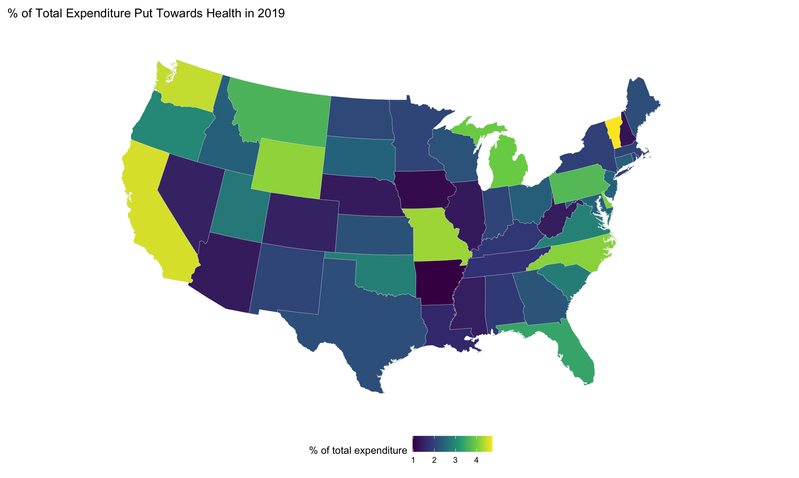

ghed_df <-
read_excel("data/GHED_data.XLSX") %>%
janitor::clean_names()
us_df <- read_csv("data/us_health.csv", skip = 2, n_max = 52) %>%
janitor::clean_names() %>%
mutate(
r01_total_revenue = as.numeric(r01_total_revenue),
state = tolower(state),
`% of total expenditure` =
(e055_health_direct_expend / e001_total_expenditure) * 100
)
us_states <- map_data("state")The plots below show patterns in health care spending in the USA over time and in specific states.
exp_per_cap<- ghed_df%>%
filter(country == "United States of America")%>%
select(country, year, gghed_pc_usd, pvtd_pc_usd)%>%
pivot_longer(cols = contains("pc_usd"),
names_to = "exp_type",
values_to = "exp_per_cap")%>%
mutate(exp_type = replace(exp_type, exp_type == "gghed_pc_usd", "Government Expenditure per Capita (USD)"),
exp_type = replace(exp_type, exp_type == "pvtd_pc_usd", "Private Expenditure per Capita (USD)"))%>%
plot_ly(x =~year, y=~exp_per_cap, name=~exp_type, color = ~exp_type, colors="viridis", type='scatter', mode='lines+markers', showlegend = F)%>%
layout( yaxis = list(title = 'Expenditure per Capita (USD)'), xaxis = list(title = "Year"))
exp_per<-ghed_df%>%
filter(country=="United States of America")%>%
select(country, year, gghed_che, pvtd_che)%>%
mutate(sum_per = gghed_che + pvtd_che)%>%
pivot_longer(cols = contains("che"),
names_to = "exp_type",
values_to = "exp_per")%>%
mutate(exp_type = replace(exp_type, exp_type == "gghed_che", "Government Expenditure"),
exp_type = replace(exp_type, exp_type == "pvtd_che", "Private Expenditure"))%>%
plot_ly(x =~year, y=~exp_per, name=~exp_type, color = ~exp_type, colors="viridis", type='scatter', mode='lines+markers')%>%
layout(yaxis = list(title = 'Percent of Total Expenditure'), xaxis = list(title = "Year"))
fig <- subplot(exp_per_cap, exp_per,nrows = 2, titleY = TRUE, titleX = TRUE, shareY = FALSE) %>%
layout(title = 'Health Expenditure in the USA Over Time')
figThese plots visualize health spending the U.S. from 2000-2019 in two different ways: in per capita USD and in % of total spending. The graph on the top highlights how the cost of health per person has increased each year for the last two decades. The graph below shows how government spending on health gradually overtook private spending around 2013.
us_states %>%
left_join(us_df, by = c("region" = "state")) %>%
ggplot(aes(x = long, y = lat, group = group, fill = `% of total expenditure`)) +
geom_polygon(color = "gray90", size = 0.1) +
coord_map(projection = "albers", lat0 = 45, lat1 = 55) +
theme(legend.position="bottom",
axis.line=element_blank(),
axis.text=element_blank(),
axis.ticks=element_blank(),
axis.title=element_blank(),
panel.background=element_blank(),
panel.border=element_blank(),
panel.grid=element_blank()
) +
labs(
title = "% of Total Expenditure Put Towards Health in 2019"
)
We can see here that the states that put the most of their state and local spending towards health are Vermont, California, and Washington state. The states that contribute the least of their expenditure towards health are Arkansas, Iowa, and New Hampshire. It’s interesting to see how spending varies so widely with regions. Take the drastic difference between New Hampshire and Vermont as an example. They are neighbors, but their health expenditure is very different.
Click here to return to the main page.